داکر یه نرمافزاره که کمک میکنه برنامهها رو داخل بستههای کوچیک و مستقل به اسم کانتینر اجرا کنیم. این کانتینرها مثل یه جعبهست که همه چیزهای لازم برای اجرای برنامه (کد، کتابخونه، تنظیمات) رو داره. با داکر برنامهها روی هر سیستمی بدون دردسر اجرا میشن، چون محیطشون همیشه ثابته. این باعث میشه توسعه و نصب برنامهها راحتتر و سریعتر بشه. خلاصهش: داکر برنامهها رو قابل حمل و مستقل میکنه.
فایل داکر (Dockerfile) یه فایل متنی سادهست که دستورالعملهای ساخت یک تصویر (Image) داکر رو داره.
داخلش مینویسیم:
پایهی تصویر چیه (مثلاً سیستمعامل یا زبان برنامهنویسی)
چه برنامهها یا کتابخونههایی باید نصب بشن
کد برنامه کجا کپی بشه
چه دستوری موقع اجرای کانتینر اجرا بشه
با استفاده از این فایل، داکر میتونه تصویر برنامه رو خودکار بسازه و هر جا خواستیم اجراش کنیم. خلاصه: Dockerfile راهنمای ساخت تصویر برای اجرای برنامهست.
فایل Docker Compose یه فایل متنی با فرمت YAML هست که برای مدیریت چند تا کانتینر داکر با هم استفاده میشه.
توی این فایل تعریف میکنیم که هر کانتینر چیه، چه تصویری باید اجرا بشه، چه پورتهایی باز باشن، چطوری با هم شبکهسازی کنن و چه تنظیماتی داشته باشن.
به کمک Docker Compose میتونیم کل سیستم یا پروژهای که شامل چند سرویسه رو با یک دستور ساده اجرا، متوقف یا مدیریت کنیم.
خلاصه: فایل Docker Compose تنظیمات چند کانتینر و نحوه کارکردشون رو در یکجا جمع میکنه.
اینها دستورات مهم و پرکاربرد Docker Compose هستن که معمولاً استفاده میشن:
docker-compose up همه سرویسها رو اجرا میکنه (اگه تصویر موجود نباشه، میسازه).
docker-compose up -d سرویسها رو در پسزمینه (Detached mode) اجرا میکنه.
docker-compose down همه کانتینرها، شبکهها و منابع ساخته شده توسط Compose رو متوقف و حذف میکنه.
docker-compose build تصاویر داکر رو طبق Dockerfile ها میسازه.
docker-compose stop فقط کانتینرها رو متوقف میکنه، حذف نمیکنه.
docker-compose restart کانتینرها رو ریستارت میکنه.
docker-compose logs لاگ خروجی کانتینرها رو نمایش میده.
docker-compose ps لیست کانتینرهای در حال اجرا رو نشون میده.
اینها پایهایترینها هستن که هر روز باهاشون کار میکنیم.
محیط توسعه - بازکردن پوشه
خب ما قراره از vs code برای ویرایش این پروژه ها اتسفاده کنیم
خب اول از همه نیازه که ما پروژه بک اند خودمون رو بسازیم بعدش حالا نیازه بریم پوشه اش رو برای workspace باز کنیم
برای باز کردن پوشه
وارد محیط Visual Studio Code میشیم
روی File > Open Folder کلیک میکنیم
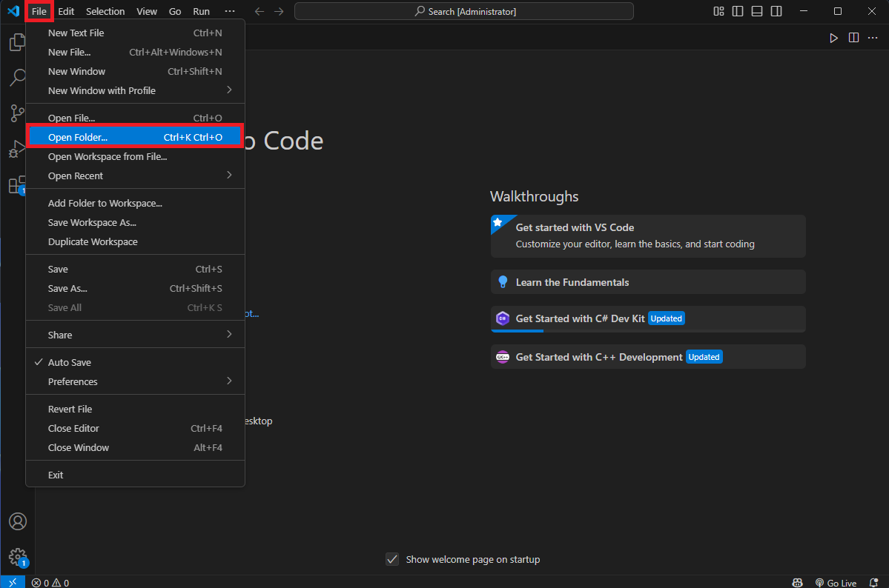
شکل 4 : باز کردن پوشه
حالا کافیه اون پوشه ای که فایل سولوشن پروژه ما قرار دارو رو انتخاب کنیم
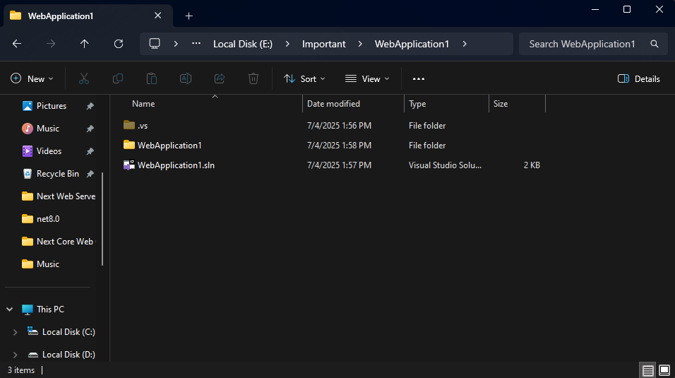
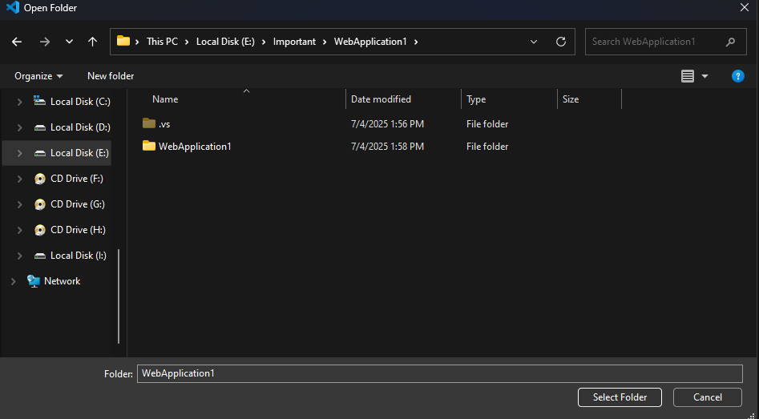
شکل 5 : باز کردن پوشه
فعال کردن پشتیبانی داکر باعث میشود بتوانیم پروژه را داخل کانتینرهای داکر بستهبندی کنیم و در محیطهای مختلف بدون مشکل اجرا کنیم.
محیط توسعه - استفاده از ترمینال
برای باز کردن ترمینال کافیه بریم Terminal > New Terminal
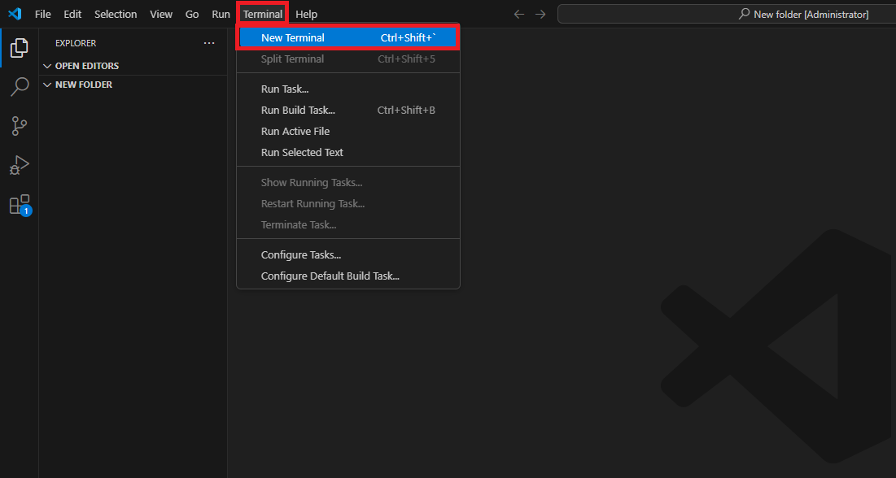
شکل 4 : باز کردن پوشه
در نهایت ترمینال باز میشه
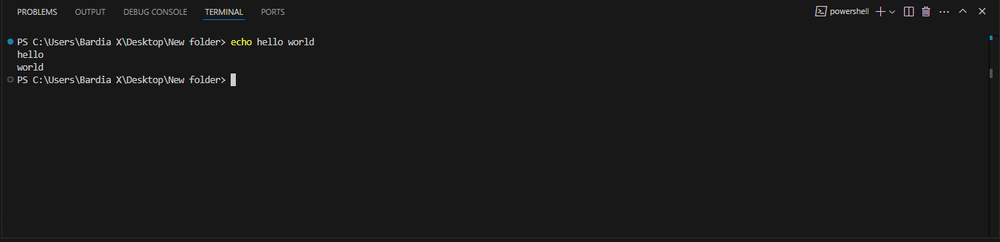
شکل 4 : باز کردن پوشه
فعال کردن پشتیبانی داکر باعث میشود بتوانیم پروژه را داخل کانتینرهای داکر بستهبندی کنیم و در محیطهای مختلف بدون مشکل اجرا کنیم.
بک اند - طریقه ساخت
برای ساخت بک اند:
وارد محیط Visual Studio میشویم.
یک پروژه ASP.NET Core API جدید میسازیم.
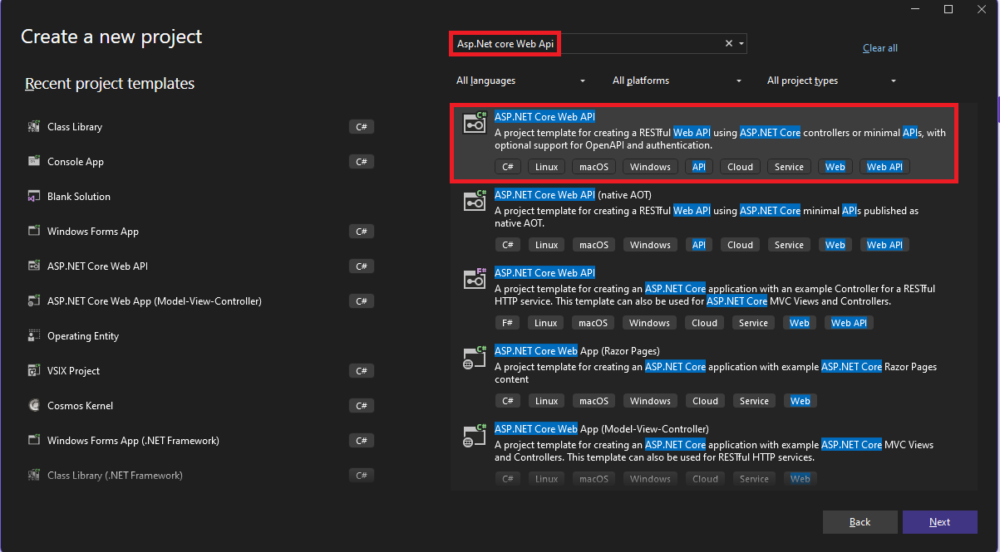
شکل 2 : جستوجو و انتخاب پروژه
حتما تیک Enable Docker Support را میزنیم. این کار باعث میشود پروژه شما آماده اجرا در محیط داکر شود و فایلهای لازم (مانند Dockerfile) به صورت خودکار ایجاد شوند.
حتما هم نوع container رو روی Windows بزارید
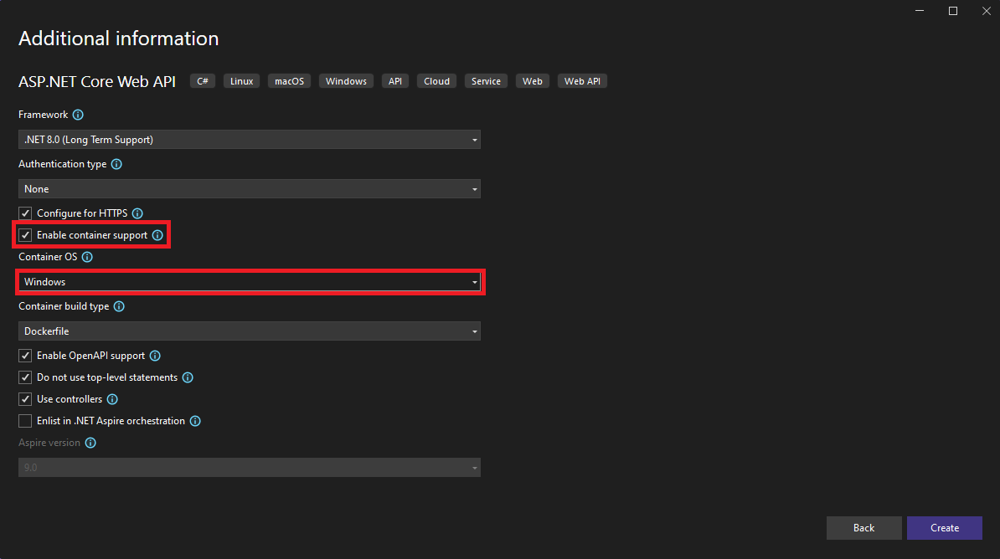
شکل 3 : تنظمیات پروژه
فعال کردن پشتیبانی داکر باعث میشود بتوانیم پروژه را داخل کانتینرهای داکر بستهبندی کنیم و در محیطهای مختلف بدون مشکل اجرا کنیم.
بک اند - اتصال به داکر
برای اینکه پروژه ASP.NET Core API خود را داخل داکر اجرا کنیم، نیاز داریم یک فایل docker-compose.yml در پوشه سولوشن بسازیم و تنظیمات زیر را به آن اضافه کنیم:
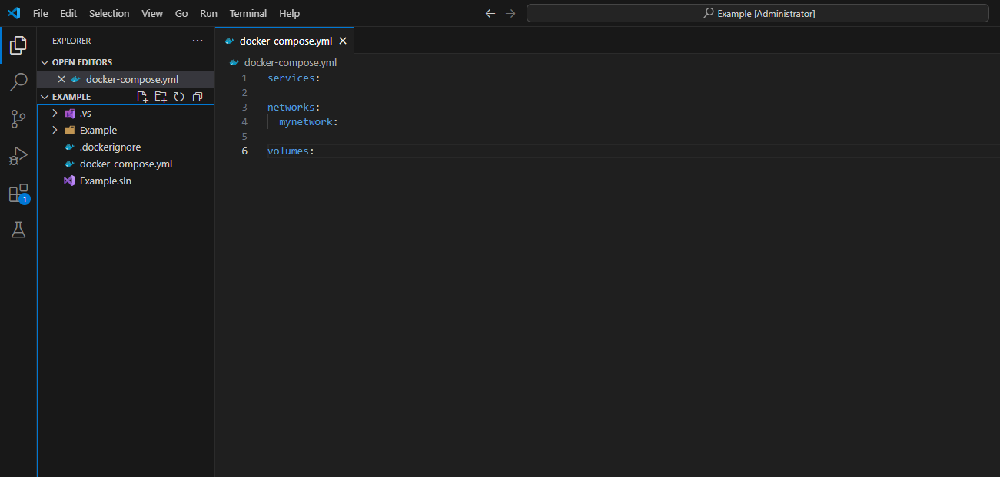
شکل 6 : Docker Compose
services:
networks:
mynetwork:
volumes:
در قسمت services هر پروژه یا سرویس که میخواهیم به داکر اضافه کنیم را تعریف میکنیم.
در بخش networks یک شبکه با نام دلخواه مثلاً mynetwork میسازیم که کانتینرها بتوانند با هم ارتباط داشته باشند.
با این کد پروژه melkapi به داکر اضافه میشود و پورت ۸۰۸۰ پروژه به پورت ۸۰۸۰ سیستم میزبان متصل میشود.
اگر با ارور dotnet run restore مواجه شدید، ممکن است فایل Dockerfile به درستی تنظیم نشده باشد. محتوای استاندارد Dockerfile برای ASP.NET Core 8 به شکل زیر است:
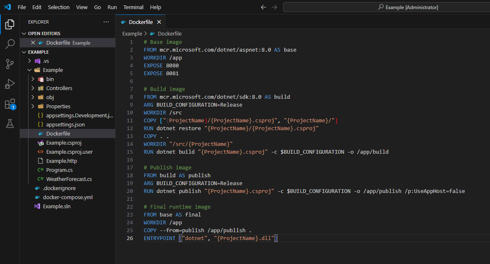
شکل 8 : Dockerfile
# Base image
FROM mcr.microsoft.com/dotnet/aspnet:8.0 AS base
WORKDIR /app
EXPOSE 8080
EXPOSE 8081
# Build image
FROM mcr.microsoft.com/dotnet/sdk:8.0 AS build
ARG BUILD_CONFIGURATION=Release
WORKDIR /src
COPY ["{ProjectName}/{ProjectName}.csproj", "{ProjectName}/"]
RUN dotnet restore "{ProjectName}/{ProjectName}.csproj"
COPY . .
WORKDIR "/src/{ProjectName}"
RUN dotnet build "{ProjectName}.csproj" -c $BUILD_CONFIGURATION -o /app/build
# Publish image
FROM build AS publish
ARG BUILD_CONFIGURATION=Release
RUN dotnet publish "{ProjectName}.csproj" -c $BUILD_CONFIGURATION -o /app/publish /p:UseAppHost=false
# Final runtime image
FROM base AS final
WORKDIR /app
COPY --from=publish /app/publish .
ENTRYPOINT ["dotnet", "{ProjectName}.dll"]
پس از تنظیم این فایلها، پروژه شما قابل ساخت و اجرا داخل داکر است.
بک اند - Migrate
این کد هنگام اجرای برنامه چند بار تلاش میکند تا مایگریشنها را اعمال کند و اگر خطایی رخ دهد، با تأخیر دوباره امتحان میکند.
برای نصب Entityframework کافیه دستور زیر رو توی کنسول تایپ کنید :
dotnet tool install --global dotnet-ef
برای ایجاد یک مایگریشن جدید، از دستور زیر در کنسول استفاده کنید:
dotnet ef migrations add {Name}
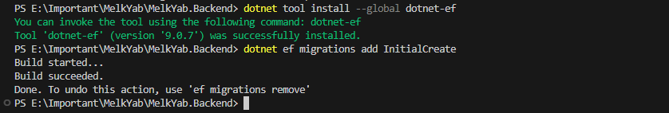
شکل 7 : مایگریشن
بک اند - طریقه ساخت Auto Migrate
برای اجرای خودکار مایگریشنهای EF Core هنگام اجرای برنامه، کافی است در بخش middleware (معمولاً داخل Program.cs بعد از اتصال دیتابیس) این کد را اضافه کنیم:
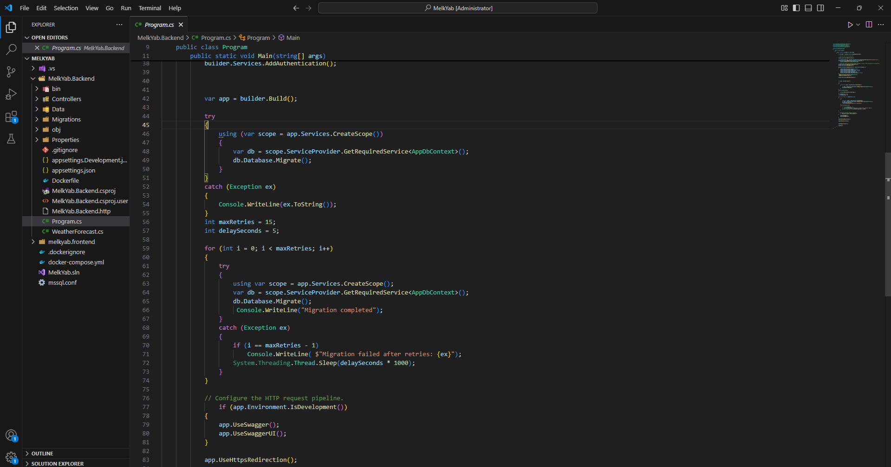
شکل 7 : مایگریشن خودکار
int maxRetries = 15;
int delaySeconds = 5;
for (int i = 0; i < maxRetries; i++)
{
try
{
using var scope = app.Services.CreateScope();
var db = scope.ServiceProvider.GetRequiredService<AppDbContext>();
db.Database.Migrate();
Console.WriteLine("Migration completed");
break;
}
catch (Exception ex)
{
if (i == maxRetries - 1)
Console.WriteLine($"Migration failed after retries: {ex}");
System.Threading.Thread.Sleep(delaySeconds * 1000);
}
}
و سپس پروژه را ریاستارت کنید تا مایگریشن اعمال شود.
بک اند - طریقه ساخت Manual Migrate
این روش توصیه نمیشود ولی اگر بخواهید مایگریشن را به صورت دستی و از طریق یک API کنترل کنید، میتوانید در یک کنترلر این متد را بسازید:
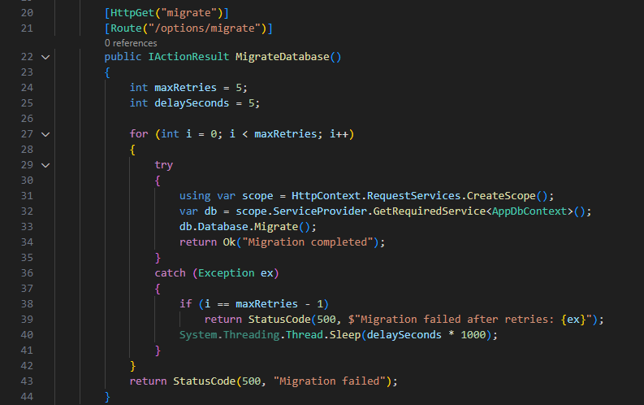
شکل 7 : مایگریشن دستی
[HttpGet("migrate")]
[Route("/options/migrate")]
public IActionResult MigrateDatabase()
{
int maxRetries = 5;
int delaySeconds = 5;
for (int i = 0; i < maxRetries; i++)
{
try
{
using var scope = HttpContext.RequestServices.CreateScope();
var db = scope.ServiceProvider.GetRequiredService<AppDbContext>();
db.Database.Migrate();
return Ok("Migration completed");
}
catch (Exception ex)
{
if (i == maxRetries - 1)
return StatusCode(500, $"Migration failed after retries: {ex}");
System.Threading.Thread.Sleep(delaySeconds * 1000);
}
}
return StatusCode(500, "Migration failed");
}
این متد یک API ارائه میدهد که با فراخوانی آن، مایگریشنها اجرا میشوند.
📦 اتصال دیتابیس به داکر
برای راهاندازی SQL Server در محیط داکر، تنها کافی است یک سرویس جدید در فایل docker-compose.yml تعریف شود. تنظیمات پیشنهادی به شکل زیر است:
توجه داشته باشید که مقادیر container_name (در اینجا: sqlserver) و SA_PASSWORD قابل شخصیسازی هستند و میتوانند با مقادیر امنتر یا مناسب پروژه جایگزین شوند.
همچنین، برای حفظ اطلاعات بین ریاستارتها، باید در انتهای فایل docker-compose.yml بخش volume را نیز اضافه کنیم:
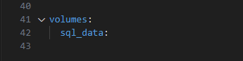
شکل 7 : Volumes
volumes:
sql_data:
🔗 تنظیم وابستگیها (Dependencies)
اگر پروژه را بهصورت همزمان با سرویسهای Backend و SQL Server اجرا کنید، ممکن است Auto Migration در EF Core به دلیل آماده نبودن دیتابیس با خطا مواجه شود.
برای حل این مشکل، میتوان از ویژگی depends_on همراه با شرط service_healthy استفاده کرد تا اطمینان حاصل شود ابتدا دیتابیس آماده است و سپس Backend اجرا شود.
همچنین ما باید توی همین قسمت ConnectionString رو هم بنویسیم
کد زیر را به بخش backend در فایل docker-compose.yml اضافه کنید، دقیقاً بعد از ports:
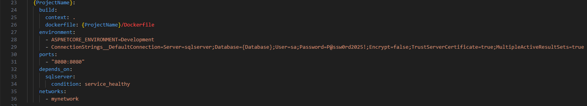
شکل 7 : Docker Compose
depends_on:
sqlserver:
condition: service_healthy
مقدار sqlserver باید با نام واقعی سرویس دیتابیس شما در فایل docker-compose مطابقت داشته باشد.
🖥️ اتصال به SQL Server با استفاده از SSMS
برای اتصال به دیتابیس SQL Server از طریق نرمافزار Microsoft SQL Server Management Studio (SSMS)، کافیست اطلاعات اتصال را وارد کرده و مطمئن شوید گزینه TrustServerCertificate برابر با true تنظیم شده است.
نمونه اطلاعات اتصال:
Server: localhost,1433
Username: sa
Password: P@ssw0rd2025!
در تنظیمات پیشرفته اتصال (Advanced)، مقدار TrustServerCertificate=true را وارد کنید تا از بروز خطاهای مربوط به SSL جلوگیری شود.
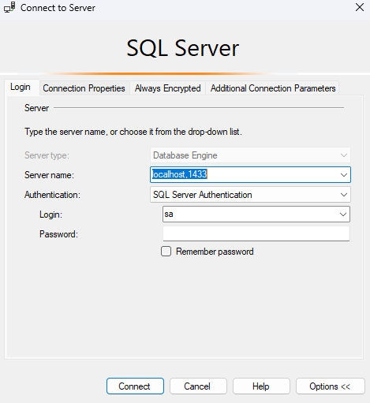
شکل 7 : اتصال به سرور از ssms
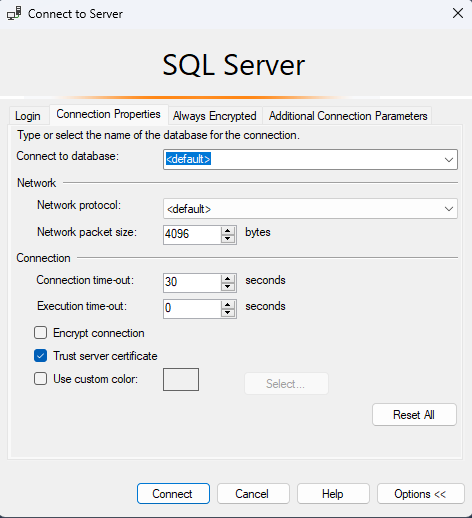
شکل 7 : فعال کردن TrustServerCertificate
نکاتی درباره سرور
معمولا ارور هایی مثل ارور های زیر میبیند که هیچ مشکلی نداره و فقط مهمه که سرور شما کرش نکرده باشه
معمولا سرور ها خیلی طول میکشند که استاندارد بشند برای اتصال از طریق MSSM و Backend باید به سرور زمان بدیم
حتی امکان اینکه healthcheck رو هم دور بزنند هست
Error: 18456, Severity: 14, State: 7.
2025-07-23 10:15:06.17 Logon Login failed for user 'sa'. Reason: An error occurred while evaluating the password. [CLIENT: 172.18.0.3]